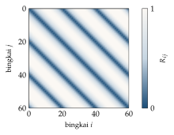

Bab 33
Recurrence CFD: Simulasi dari Ingatan
Recurrence CFD adalah topik tugas akhir saya, dan kuliah metode numerik fluida memberinya satu pertemuan penuh. Stefan Pirker membukanya dengan Max dan Moritz, dua anak nakal dari cerita bergambar Wilhelm Busch, dan guru mereka, Lehrer Lämpel. Max dan Moritz membuat tebakan yang berani, sang guru mengoreksinya. Menurut Pirker, begitulah cara algoritme SIMPLE menyelesaikan persamaan Navier–Stokes: tebakan yang tidak sempurna, lalu koreksi berbasis fisika. Dan begitulah juga rCFD dikembangkan. Bab ini mengikuti alur kuliah itu, lalu menceritakan sedikit tentang apa yang saya kerjakan dalam tugas akhir.
Aliran yang mengulang dirinya
Banyak aliran yang menarik bagi industri berjalan lama sekali. Peleburan baja di dalam ladle, pencampuran di tangki berpengaduk, dan gelembung yang naik di kolom gelembung bisa berlangsung menit sampai jam, sedangkan simulasi CFD yang teliti hanya sanggup menjangkau beberapa puluh detik waktu fisis dalam waktu hitung yang wajar. Untungnya, banyak aliran seperti ini, setelah melewati fase awal, tidak menghasilkan pola yang benar-benar baru. Pusaran datang dan pergi, gelembung naik dalam pola yang mirip, dan keadaan aliran berulang kali kembali ke dekat keadaan yang pernah dikunjungi sebelumnya.
Pengulangan ini bisa diukur. Simpan medan aliran dari simulasi penuh sebagai deretan bingkai \(\boldsymbol\phi_1,\dots,\boldsymbol\phi_M\). Untuk setiap pasangan bingkai, hitung jaraknya, lalu normalisasikan: \[R_{ij}=\frac{\|\boldsymbol\phi_i-\boldsymbol\phi_j\|}{\max_{k,l}\|\boldsymbol\phi_k-\boldsymbol\phi_l\|}.\] Matriks \(\boldsymbol R\) ini disebut recurrence matrix. Diagonalnya nol, karena setiap bingkai identik dengan dirinya sendiri. Kalau aliran periodik sempurna, garis-garis gelap sejajar diagonal muncul pada jarak satu periode. Pada aliran turbulen, polanya lebih kabur, tetapi tetap ada daerah-daerah di luar diagonal dengan nilai kecil: pasangan bingkai yang berjauhan dalam waktu tetapi mirip satu sama lain. Dalam bahasa machine learning, \(\boldsymbol R\) adalah matriks jarak antar sampel, dan pasangan dengan jarak kecil adalah tetangga terdekat di ruang keadaan aliran. Gambar 33.1 memperlihatkan bentuk khas matriks ini untuk aliran yang hampir periodik.

rCFD berbasis aliran
Gagasan pertama, yang diterbitkan Lichtenegger dan Pirker (2016) untuk kolom gelembung, berbunyi seperti kalimat yang berulang di slide: “kita putuskan dengan berani untuk menyusun aliran buatan dengan menjahit potongan-potongan rangkaian aliran”. Mulailah dari sebuah bingkai, mainkan beberapa bingkai berikutnya dari basis data, lalu lompat ke bingkai lain yang mirip dengan bingkai terakhir menurut recurrence matrix, dan teruskan dari sana. Hasilnya adalah deret medan aliran sepanjang yang kita mau, yang secara statistik meniru aliran asli, tanpa pernah menyelesaikan persamaan Navier–Stokes lagi.
Di atas aliran yang dijahit ini, besaran yang terbawa aliran, misalnya konsentrasi zat terlarut, dilacak dengan persamaan transport implisit (Persamaan (26.6)). Persamaan transport untuk satu besaran skalar jauh lebih murah daripada persamaan Navier–Stokes yang terkopel, dan karena implisit, langkah waktunya bisa jauh lebih besar. Pada kasus kolom gelembung, rCFD berbasis aliran menghasilkan prediksi yang cocok dengan CFD penuh dengan percepatan sekitar seratus kali.
Bayangkan mencoba meramalkan arus lalu lintas sebuah kota selama setahun. Daripada mensimulasikan setiap mobil, kita merekam lalu lintas selama beberapa minggu, lalu menyusun tahun buatan dengan menyambung potongan-potongan hari yang mirip: setelah Senin pagi yang macet biasanya datang siang yang agak sepi. Kalau yang kita pedulikan adalah ke mana sebuah paket akan sampai, rekaman lalu lintas yang dijahit sudah cukup.
rCFD berbasis transport
Langkah kedua, dari Pirker dan Lichtenegger (2018), bahkan melewati persamaan transport. Kuliah menjelaskannya dengan sungai Danube di Linz. Sebuah zat yang dijatuhkan ke sungai dibawa arus dan menyebar. Arus membawa zat dari satu tempat ke tempat lain, yaitu konveksi, dan pusaran kecil membuatnya menyebar, yaitu difusi. Dalam bahasa sel-sel volume hingga, konveksi berarti sebagian isi sebuah sel berpindah ke sel lain, dan difusi berarti dua sel bertetangga saling bertukar isi. Mesh simulasi adalah jaringan komunikasi antar sel. rCFD berbasis transport memutuskan, sekali lagi dengan berani, untuk mengganti konveksi dengan cell-to-cell shifts dan difusi dengan face swaps yang direkam dari simulasi penuh.
Secara sederhana, satu langkah transport menjadi perkalian dengan sebuah matriks pemindahan. Kalau \(c_i\) adalah jumlah zat di sel \(i\) dan \(P_{ji}\) fraksi isi sel \(i\) yang dipindahkan ke sel \(j\) dalam satu langkah, maka \[c_j^{\mathrm{baru}}=\sum_iP_{ji}\,c_i.\] Massa total kekal tepat ketika setiap kolom \(\boldsymbol P\) berjumlah satu, \(\sum_jP_{ji}=1\): semua isi sel \(i\) pergi ke suatu tempat, tidak ada yang hilang dan tidak ada yang muncul. Buktinya satu baris: jumlah semua \(c_j^{\mathrm{baru}}\) adalah \(\sum_i c_i\sum_jP_{ji}=\sum_ic_i\).
Contoh tiga sel di sebuah saluran tertutup membuatnya konkret. Aliran membawa isi dari sel pertama ke sel kedua dan dari sel kedua ke sel ketiga, dan sel ketiga adalah ujung buntu: \[\boldsymbol P=\begin{pmatrix}0{,}7&0&0\\0{,}3&0{,}6&0\\0&0{,}4&1\end{pmatrix}.\] Setiap kolom berjumlah satu. Mulai dengan seluruh zat di sel pertama, \(\boldsymbol c=(1,0,0)\). Setelah satu langkah \(\boldsymbol c=(0{,}7;\ 0{,}3;\ 0)\), setelah dua langkah \((0{,}49;\ 0{,}39;\ 0{,}12)\), dan jumlahnya tetap satu. Sekarang bayangkan kolom pertama hanya berjumlah \(0{,}98\) karena dua bingkai yang dijahit tidak cocok sempurna. Zat yang melewati sel itu kehilangan dua persen setiap kali, dan setelah seratus langkah, \(0{,}98^{100}\approx0{,}13\). Galat yang tampak kecil dalam satu langkah menghabiskan hampir seluruh zat dalam simulasi panjang. Inilah bentuk kegagalan pertama di bawah, dan juga alasan mengapa kekekalan harus dijaga secara struktural, bukan diharapkan muncul sendiri. Pembaca yang ingat Bab 31 akan mengenali bahwa matriks seperti ini adalah versi diskret dari operator transfer, saudara operator Koopman, yang memajukan distribusi alih-alih memajukan pengamatan.
Selisih kecepatannya besar sekali. Untuk simulasi pencampuran di sebuah ladle baja, slide kuliah membandingkan CFD penuh yang membutuhkan 26 jam dengan rCFD berbasis transport yang selesai dalam 1,6 detik pada perangkat keras yang sama, dengan histogram konsentrasi yang cocok di beberapa titik waktu.
Memilih lompatan dan menilai hasil
Penjahitan aliran membutuhkan dua keputusan praktis. Pertama, kapan melompat. Kalau lompatan dilakukan terlalu sering, aliran yang dijahit kehilangan kontinuitas waktu, dan struktur yang seharusnya terbawa beberapa langkah terputus di tengah jalan. Kalau terlalu jarang, basis data dimainkan ulang hampir apa adanya, dan statistik jangka panjangnya hanya sebaik panjang rekaman. Biasanya rekaman dimainkan selama beberapa bingkai berturut-turut, lalu lompatan dilakukan ke salah satu dari beberapa kandidat terdekat menurut recurrence matrix, dipilih secara acak agar urutan yang dijahit tidak berputar di lingkaran yang sama.
Kedua, berapa jauh boleh melompat. Ambang kemiripan yang ketat menjamin sambungan yang mulus tetapi mempersempit pilihan, sedangkan ambang longgar memberi banyak pilihan dengan sambungan yang lebih kasar. Masalah ini mirip dengan pemilihan \(k\) pada \(k\)-nearest neighbour di Bab 6, dan jawabannya juga mirip: tidak ada angka yang benar untuk semua kasus, sehingga pengaruhnya harus diuji.
Menilai hasil rCFD juga butuh hati-hati. Karena aliran yang dijahit tidak pernah identik dengan aliran asli bingkai demi bingkai, membandingkan medan sesaat tidak adil, alasan yang sama dengan evaluasi rollout di Bab 30. Yang dibandingkan adalah besaran yang dipedulikan: kurva konsentrasi atau temperatur di titik-titik pemantauan, waktu yang dibutuhkan untuk mencapai keadaan tercampur, dan distribusi besaran di seluruh domain. Neraca global, seperti total massa atau energi, menjadi pemeriksaan pertama yang murah, karena galat neraca yang tumbuh adalah tanda paling awal bahwa sesuatu di dalam matriks pemindahan tidak beres.
Tiga kegagalan berani dan koreksinya
Bagian paling jujur dari kuliah adalah tiga “kegagalan berani” rCFD dan cara memperbaikinya.
Kegagalan pertama adalah ketidakseimbangan massa. Untuk simulasi yang panjang, hasil rCFD menyimpang dari CFD penuh. Penyebabnya, pemindahan antar sel yang direkam dari bingkai berbeda dan dijahit bersama tidak menjamin bahwa setiap kolom \(\boldsymbol P\) berjumlah tepat satu. Secara lokal, sebagian massa hilang dan sebagian lain tercipta. Secara global, neraca massa spesies bisa dihitung dengan mudah, sehingga galat rCFD bisa dipantau. Koreksinya memakai pemantau global itu untuk menyesuaikan pola konsentrasi lokal lewat face swaps yang bekerja pada massa, sehingga neraca kembali seimbang.
Kegagalan kedua adalah difusi yang tidak fisis. Face swaps yang sama kuatnya di semua tempat membuat zat menyebar terlalu cepat di daerah tenang dan terlalu lambat di daerah turbulen. Du, Blocken, dan Pirker (2020), yang menerapkan rCFD pada penyebaran polutan di sekitar bangunan, memperbaikinya dengan membuat kekuatan face swaps bergantung pada turbulensi lokal, yang dalam LES dinyatakan oleh viskositas sub-grid.
Kegagalan ketiga adalah pengulangan yang kurang menonjol. Di domain yang besar, tidak ada dua bingkai yang mirip di semua tempat sekaligus. Penjahitan global memasangkan bingkai yang secara rata-rata mirip tetapi secara lokal, misalnya di ekor pusaran di belakang sebuah gedung, tidak mirip sama sekali. Usulan koreksinya adalah memecah domain menjadi “pulau-pulau” dengan pengulangan yang kuat dan “laut” latar dengan pengulangan yang lemah, masing-masing dengan recurrence matrix sendiri.
Menuju kembaran digital
Kuliah ditutup dengan visi yang lebih besar. Kalau rCFD begitu cepat, ia bisa berjalan bersamaan dengan proses industri yang sebenarnya, sebagai kembaran digital. Masalahnya, proses nyata punya lebih dari satu keadaan operasi, dan rCFD yang dijalankan maju tanpa koreksi pasti melenceng dari kenyataan. Jalan keluarnya mirip asimilasi data di Bab 14: jalankan rCFD sambil mengoreksinya dengan pengukuran proses yang tersedia secara langsung. Kuliah memperlihatkan percobaan sederhana untuk ide ini, dua aliran air panas dan dingin yang dicampur di sebuah tangki dengan deretan sensor temperatur vertikal. Model tangki ideal yang tercampur sempurna terlalu sederhana karena mengabaikan perbedaan di dalam tangki, sedangkan CFD tanpa validasi rawan galat. rCFD yang diturunkan dari CFD dan dikoreksi dengan data sensor menempati tempat di antara keduanya.
Tugas akhir saya
Tugas akhir saya menerapkan rCFD berbasis transport pada pancaran apung (buoyant jet) di dalam sebuah tangki: air hangat yang masuk dan naik karena lebih ringan, lalu bercampur dengan air di sekitarnya. Kasus ini menyentuh dua kegagalan di atas sekaligus. Pancaran yang naik membentuk lapisan temperatur yang tajam, dan setiap difusi tambahan dari pemindahan antar sel mengaburkan lapisan itu. Ketika dinding tangki kehilangan panas ke lingkungan, alirannya juga tidak lagi berulang sempurna, karena temperatur rata-rata terus turun.
Benang merah pekerjaannya adalah mengambil lebih banyak informasi dari simulasi penuh dan menyimpannya di dalam basis data rCFD, alih-alih memakai satu konstanta global. Salah satu contohnya adalah difusivitas lokal yang direkam dari CFD dan dipakai kembali saat replay, gagasan yang sejalan dengan koreksi Du, Blocken, dan Pirker (2020). Contoh lain adalah difusivitas negatif yang terkendali untuk mempertajam kembali gradien yang terlalu kabur, dengan pembatas seperti pada skema flux-corrected transport agar tidak muncul osilasi. Hasil-hasil kuantitatifnya ada di laporan tugas akhir. Yang ingin saya sampaikan di sini lebih sederhana: setiap perbaikan mengikuti pola yang sama dengan yang diajarkan di kuliah, yaitu tebakan yang berani diikuti koreksi berbasis fisika.
rCFD dari sudut pandang machine learning
Setelah membaca bab-bab sebelumnya, rCFD bisa dilihat dengan mata machine learning. Basis data bingkai adalah ingatan, recurrence matrix adalah ukuran kemiripan antar keadaan, dan penjahitan adalah mencari tetangga terdekat di ruang keadaan lalu melompat ke sana. Tidak ada jaringan saraf dan tidak ada pelatihan dengan gradien. rCFD adalah model pengganti nonparametrik, mirip \(k\)-nearest neighbour (Bab 6) yang diterapkan pada lintasan dinamika. Matriks pemindahan antar sel adalah operator transfer yang dipelajari dari data, saudara dekat DMD dan Koopman (Bab 31). Dan koreksi neraca massa adalah contoh paling jelas dari prinsip model hibrida (Bab 32): biarkan data memberi dinamika, dan biarkan hukum kekekalan menjaga agar hasilnya tetap fisis.
Kekuatannya juga kelemahannya. Karena hanya memutar ulang dan menyusun kembali apa yang pernah dilihat, rCFD tidak bisa menghasilkan keadaan aliran yang benar-benar baru. Untuk aliran yang memang mengulang dirinya, itu justru jaminan: hasilnya tidak akan berhalusinasi. Untuk aliran yang berubah keadaan operasinya, dibutuhkan basis data dengan banyak keadaan dan cara memilih di antaranya, persis pertanyaan yang diangkat kuliah tentang proses nyata yang punya lebih dari satu keadaan operasi. Di sinilah rCFD dan model pengganti berbasis jaringan saraf, seperti yang disinggung di slide terakhir kuliah, mungkin akan saling melengkapi.
Perkembangan riset
Riset rCFD terus berjalan setelah kuliah. Beberapa publikasi terbaru memperlihatkan arah-arahnya. Hoorijani (2025) mengusulkan rCFD daring, yang menjalankan analisis pengulangan sambil simulasi berjalan, untuk aliran multifase. Pirker dkk. (2025) menerapkan CFD-DEM dan rCFD pada segregasi ukuran partikel di unggun terfluidisasi gas–padat dengan dua dan lima ukuran partikel. Lumetzberger, Pirker, dan Lichtenegger (2025) mengusulkan aproksimasi momen-propagator untuk transport spesies dalam aliran turbulen, sebuah cara lain merumuskan langkah transport rCFD. Shariatifar dkk. (2026) menilai akurasi rCFD untuk sistem aliran kontinu, dan Shaik dkk. (2026) membandingkan simulasi CFD-DEM sebuah unggun terfluidisasi bergelembung dengan pengukuran MRI sebelum memakai rCFD untuk ekstrapolasi waktu. Arah-arah ini sejalan dengan tiga kegagalan di bab ini: menjaga neraca, memperhalus difusi, dan memperluas rCFD ke aliran yang tidak periodik sempurna.
Catatan sumber.
Bab ini mengikuti pertemuan tentang recurrence CFD dalam kuliah Numerical Methods in Fluid Mechanics dan pengalaman selama tugas akhir. Makalah utamanya: Lichtenegger dan Pirker (2016) untuk rCFD berbasis aliran, Pirker dan Lichtenegger (2018) untuk rCFD berbasis transport, dan Du, Blocken, dan Pirker (2020) untuk penerapan pada lingkungan bangunan.